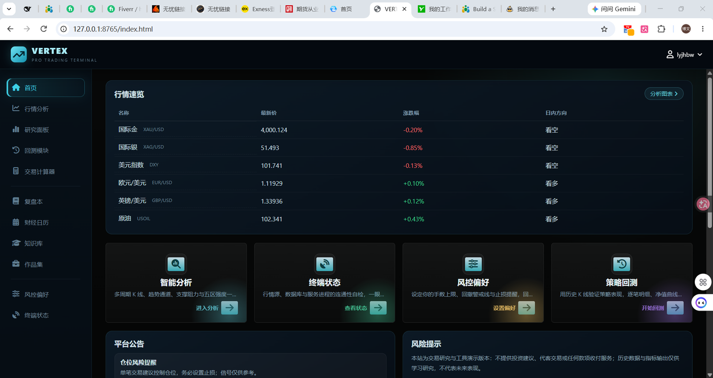
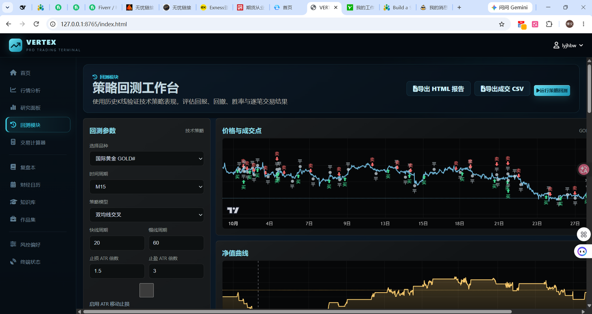

Expert Advisors, indicators and risk modules for MetaTrader 4 & 5.
Plus Python tooling for backtesting and trade-data reconciliation.
13,417lines of trading code shipped
33files in my own trading terminal
3 yrsgold risk & order execution on MT5
9,984backtest parameter combinations run
What I build
Expert Advisors in native MQL5 / MQL4 using the CTrade class — entry logic, stop loss / take profit, break-even, trailing stop, partial close.
Risk modules — hard stop loss that cannot be removed from the chart, percentage risk per trade, absolute daily loss limit, overall drawdown guard, Friday close-all.
On-chart control panels — input fields for price levels, direction, risk settings and time windows; no defaults, the bot does nothing until the user fills them in.
Session tools — automatic Asia / London / New York high-low lines usable as take-profit targets.
Indicator work — volume classification, hidden-zone and retest logic, multi-timeframe dashboards.
MT4 ↔ MT5 conversion — rewriting the trade layer, not patching it.
Python side — CSV/Excel reconciliation, automated reports, backtest engines.
My own terminal
The screenshots below are from a trading terminal I built and run myself: PHP backend, Python MT5 bridge, vanilla JS charts. It is not a mock-up.

Live dashboard — quotes and session direction for gold, silver, dollar index, majors and oil, pulled from a running MT5 terminal.

Backtest workbench — parameter panel (symbol, timeframe, MA cross, ATR stop/target), price with entry and exit markers, equity curve. Runs on real M1–D1 history and exports an HTML report.
What I do
Write the exact rules you specify
Deliver full .mq5 source, commented
Test on a demo account before delivery
Tell you an honest date, not a flattering one
Flag it when a requirement cannot work as described
What I don't do
Martingale, grid or averaging systems
Promise win rates or monthly returns
Crack or bypass protected .ex4/.ex5 files
Manage accounts or trade on your behalf
Give investment advice
On strategy performance. I have spent a long time measuring trading edges, and most retail ideas lose money after spread. I build tools that execute your rules correctly and keep risk under control — I do not sell profit. If you want a system that "wins 90% of the time", I am the wrong developer.
Background
Three years as a risk and order-execution specialist at a gold trading firm in Shenzhen: I sat between client orders and the upstream hedge, managing exposure on MT5 every day. That is where the interest in hard risk controls comes from — not from a course, but from watching what happens when a stop loss is optional.